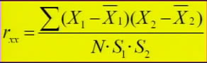
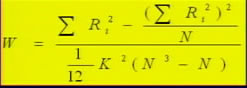
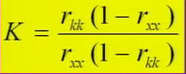
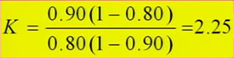

00:00
第三节 测验的信度
第一单元 信度的概念
一、信度的定义
信度是指同一被试者在不同时间内用同一测验（或用另一套相等的测验）重复测量，所得结果的一致程度。
在测量理论中，信度被定义为：一组测量分数的真分数方差与总方差（实得分数的方差）的比率。
二、信度的指标
（一）信度系数与信度指数
信度指数是真分数标准差与实得分数标准差的比值。
信度指数的平方就是信度系数。
（二）测量标准误
测量误差分布的标准差，即为测量的标准误。
03:46
第二单元 信度评估的方法
一、重测信度（test-retest reliability）
又称稳定性系数。它的计算方法是采用重测法，即使用同一测验，在同样条件下对同一组被试者前后施测两次测验，求两次得分间的相关系数。

最适宜的时距随测验的目的、性质和被试特点而异，一般是两周到四周较宜，间隔时间最长不超过六个月。
二、复本信度（alternate-form reliability）
又称等值性系数， 它是以两个等值但题目不同的测验（复本）来测量同一群体，然后求得被试者在两个测验上得分的相关系数，这个相关系数就代表了复本信度的高低。
如果两个复本的施测相隔一段时间，则称稳定与等值系数。
在计算复本信度时，应该有半数的被试先作A本再作B本，另一半被试先作B本再作A本，由此可以抵消施测顺序的效应。
13:31
三、内部一致性信度（internal consistency reliability）
1.分半信度（split-half reliability）
是在测验实施后将测验按奇、偶数分为等值的两半，并分别计算每位被试在两半测验上的得分，求出这两半分数的相关系数。
分半法经常会低估信度，必须修正，借以估计整个测验的信度。
2.同质性信度（homogeneity reliability）
同质性主要代表测验内部所有题目间的一致性。当各个测题的得分有较高的正相关时，不论题目的内容和形式如何，则测验为同质的。相反，即使所有题目看起来好象测量同一特质，但相关很低或为负相关时，则测验为异质的。
四、评分者信度（scorer reliability）
随机抽取若干份测验卷，由两位评分者按评分标准分别给分，然后再根据每份测验卷的两个分数计算相关，即得评分者信度。
一般要求在成对的受过训练的评分者之间平均一致性达0.90以上，才认为评分是客观的。
当多个评分者评定多个对象，并以等级法记分时，可采用肯德尔和谐系数作为评分者信度的估计。

21:00
第三单元 信度与测验分数的解释
一．解释真实分数与实得分数的相关
信度系数可以解释为总的方差中有多少比例是由真实分数的方差决定的，也就是测验的总变异中真分数造成的变异占百分之几。
二．确定信度可以接受的水平
当rxx<0.70时，测验不能用于对个人作出评价或预测，而且不能作团体比较；当0.70≤rxx<0.85时，可用于团体比较；当rxx≥0.85时，才能用来鉴别或预测个人成绩或作为。
三．解释个人分数的意义
其一是估计真实分数的范围；其二是了解实得分数再测时可能的变化情形。这就是测量标准误的应用。
四．比较不同测验分数的差异
这种比较包括两个人不同分数的差别和同一被试在两个测验上的差别。这就是差异分数的标准误问题。
28:55
第四单元 影响信度的因素
一、样本特征
（一）样本团体异质性的影响
（二）样本团体平均能力水平的影响
二、测验长度
（一）测验越长测题取样或内容取样越有代表性。
（二）测验越长被试的猜测因素影响就越小。
*假设我们希望用增加测验长度的方式提高测验的信度以达到某种理想值，通过斯皮尔曼-布朗公式的导出公式就可以计算出最少应增加的题数。其公式为：

例如：有一个包含40个题的测验，信度为0.80，若把信度提高到0.90，应该增加多少个题目。
 40 X 2.25-40=60（题）
三、测验难度
难度与信度不存在简单的对应关系。如果因为难度过大或过小，造成分数范围缩小，可使信度降低。
四、时间间隔
再测法求信度，间隔时间越短信度系数越大；间隔时间越久，信度系数越低。